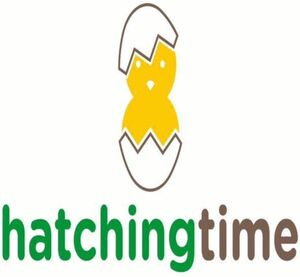

Trade Mark Journal No.2025/040 3 October 2025
WO0000001729760 (7,8,35)
Office of origin: Turkey
Date of International Registration:20 March 2023
Date of designation in the UK:
2 September 2025

There is a chick figure between a cracked egg. The figure is above "hatchingtime" inscription. "hatching" inscription is green. "time" inscription is dark grey.
The mark contains the colours yellow, green and dark grey.
The chick figure between the cracked egg is yellow. "hatching" inscription is green. "time" inscription is dark grey.
- Class 7
- Machines and robotic mechanisms (machines) for use in agriculture and animal breeding, machines and robotic mechanisms (machines) for processing cereals, fruits, vegetables and food, machines for preparing and processing beverages.
- Class 8
- Hand-operated [non-electric] hand tools for the repair of machines, apparatus and vehicles and for use in construction, agriculture, horticulture and forestry, none of them being power tools.
- Class 35
- Advertising, marketing and public relations, organization of exhibitions and trade fairs for commercial or advertising purposes, promoting the designs of others by means of providing online portfolios via a website, the bringing together, for the benefit of others, of a variety of goods, namely, machines and robotic mechanisms (machines) for use in agriculture and animal breeding, machines and robotic mechanisms (machines) for processing cereals, fruits, vegetables and food, machines for preparing and processing beverages, hand-operated [non-electric] hand tools for the repair of machines, apparatus and vehicles and for use in construction, agriculture, horticulture and forestry, none of them being power tools, enabling customers to conveniently view and purchase those goods, such services may be provided by retail stores, wholesale outlets, by means of electronic media or through mail order catalogues.
HT KANATLI HAYVAN EKİPMANLARI ANONİM ŞİRKETİ
Representative: ERDEM KAYA PATENT VE DAN. A.Ş., KONAK MAH. KUDRET SOK.,, ELİTPARK PARK SİT.,, OFİSLER APT. 12/27 Kat:5, NİLÜFER/BURSA, TURKEY